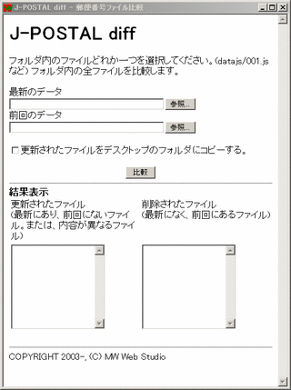

|
J-POSTALトップ
jpostal_diff.hta
J-POSTALデータ用の簡易diff
J-POSTALの郵便データは、郵便番号の上３桁ごとに分かれており、約1000ファイル、約10Mバイトあります。ISDN64kで全ファイルを上書きアップロードすると、30分近くかかります。そこでアップロードが必要なファイルを選別する簡易diffを用意しました。(別途FTP作業が必要です)
WindowsのHTMLアプリケーションとして動作します。
ADSLなど1Mbps以上の通信回線をお使いの場合
本機能は使うよりも、FTPソフトのミラーリングアップロード機能を推奨します。
ISDN(64k)だが、、更新頻度が６ケ月に１回程度の場合
経験的には６ケ月経過すると、半分近くの約500ファイルは更新されています。この場合も、本機能は使うよりも、FTPソフトのミラーリングアップロード機能を推奨します。

使い方
- 最新のデータは、D:\jpostal-031210\datajs\*.js
前回のデータは、D:\jpostal-030610\datajs\*.js
にあるとします。
- [最新のデータ]欄の[参照]ボタンを押して、D:\jpostal-031210\datajs\001.js を選択します。
- [前回のデータ]欄の[参照]ボタンを押して、D:\jpostal-030610\datajs\001.js を選択します。
- [更新されたファイルをデスクトップにコピーする]チェックボックスにチェックを付けます。
- [比較]ボタンを押します。
比較方法は、ファイル日付ではなく、ファイル内容です。マシン構成によっては数分以上かかる場合があります。途中で「スクリプトを中断しますか」と表示されたら、[いいえ]ボタンを押します。
- 結果表示に、更新されたファイル、削除されたファイルの一覧が表示されます。
- デスクトップに jpostal_diff_yyyymmddHHMMSS のフォルダが作成されます。yyyymmddHHMMSS
は作業した日時、yyyy年mm月dd日HH時MM分SS秒です。そのフォルダ下に、更新されたファイルがコピーされています。このファイルをアップロード元として、FTPで上書きアップロードしてください。
- 削除されたファイルの一覧を見ながら、FTPでサーバー上から削除します。
(実際は常に1000ファイルあるため、実際は削除すべきファイルはありません)
J-POSTALトップ
|